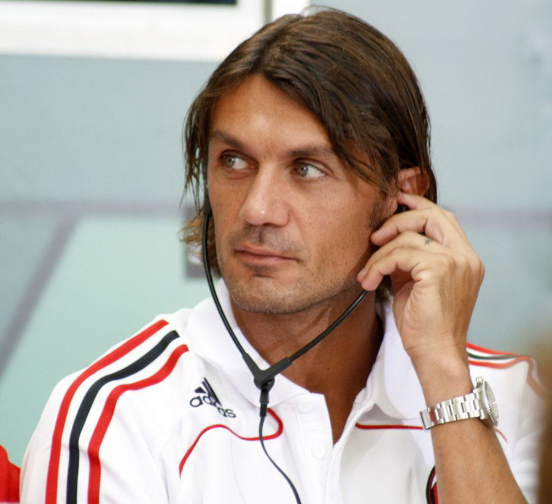
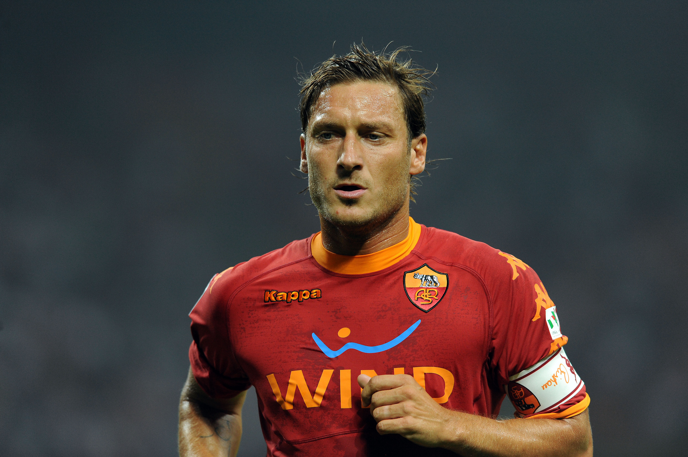
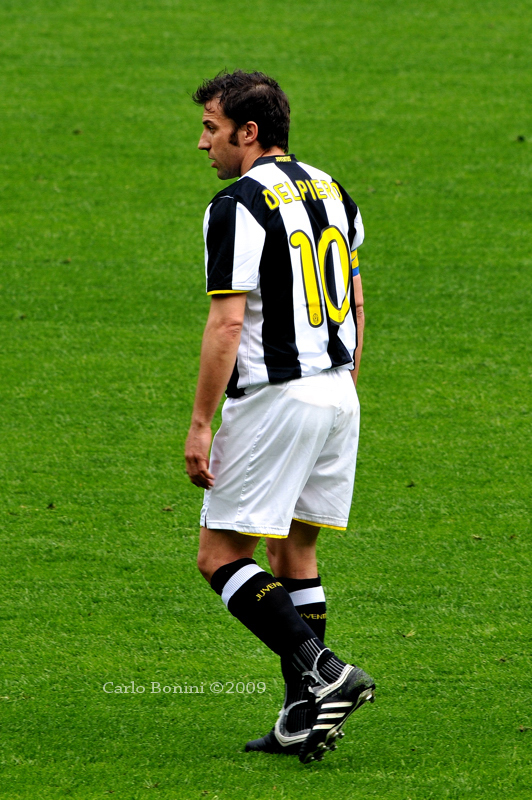
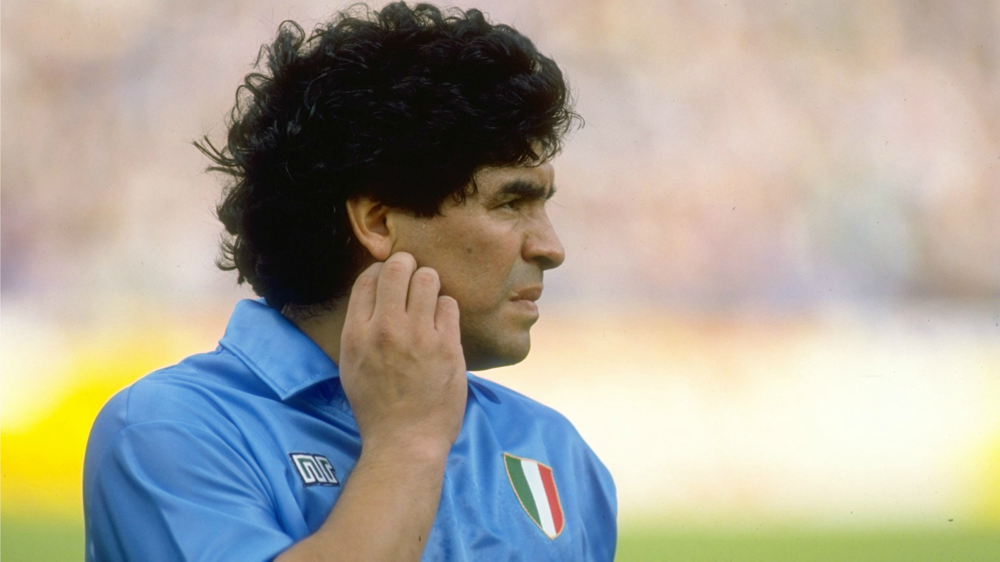
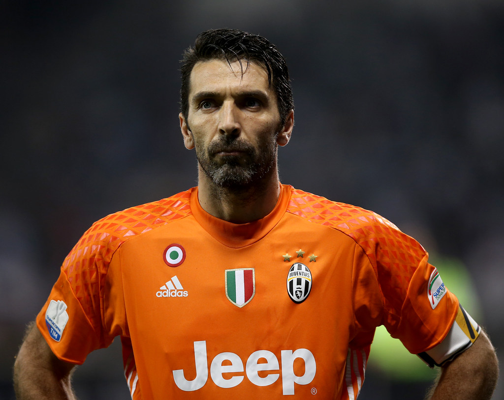

Paolo Maldini
Paolo Maldini, légendaire défenseur de l'AC Milan et de l'équipe nationale italienne, incarne l'excellence et la loyauté dans le monde du football.
Avec sa vision stratégique, son sens du timing impeccable et sa classe indéniable, il est devenu l'un des plus grands défenseurs de tous les temps.
Francesco Totti
Francesco Totti, symbole de l'AS Roma, brille par sa créativité, sa loyauté et son talent inné.
Son jeu magistral et sa connexion avec les supporters en font une icône intemporelle du football italien.
Alessandro Del Piero
Alessandro Del Piero, maestro de la Juventus, incarne la grâce et la précision sur le terrain.
Son flair pour les buts et sa loyauté envers le club en font une légende chérie du football italien.
Diego Maradona
Diego Maradona, génie argentin du football, a illuminé la Serie A de sa magie inégalée.
Son dribble hypnotisant et ses exploits légendaires en font une figure mythique du foot.
Gianluigi Buffon
Gianluigi Buffon, gardien emblématique de la Juventus, est réputé pour son calme imperturbable et son leadership sur le terrain.
Son talent exceptionnel et sa longévité remarquable en font une légende incontestée de la Serie A.